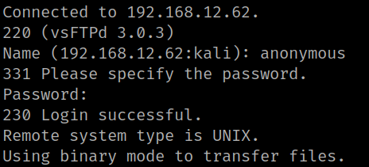
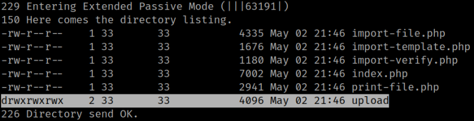

3.1 FTP
1. Create a FTP anonymous connection with the victim's machine. Credentials anonymous:anonymous.
$ ftp 192.168.12.62
Output:

2. Go to the path “/var/www/html/phpipam/app/subnets/import-subnet” and list the files.
ftp> cd /var/www/html/phpipam/app/subnets/import-subnet
ftp> ls
Output:

There's a directory called “upload" where you can do wherever you want to.